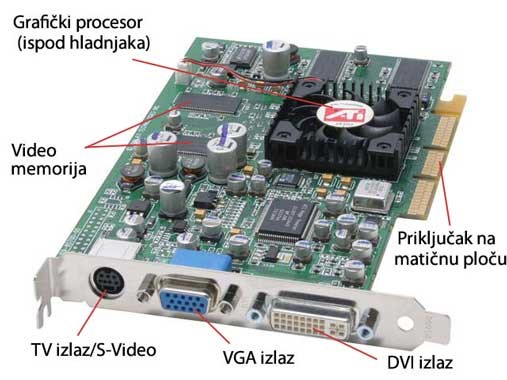

Monitor se spaja s računalom sklopom koji se naziva grafička kartica (engl. graphic card). Zadaća grafičke kartice je pretvorba digitalnih signala iz računala u oblik koji monitor može obraditi. Grafička kartica i monitor moraju biti sukladni. Grafička se kartica ugrađuje u računalo i spaja s monitorom priključnim kabelom. Suvremene grafičke kartice su složeni sklopovi, koji su zapravo malo zasebno računalo. Cijena grafičkih kartica može premašiti cijenu cjelokupnog ostalog sklopovlja računala. Grafičke se kartice sastoje od tri glavna dijela: grafičkog procesora, memorije i digitalnog-analognog pretvornika. Grafički procesor posebno je građen mikroprocesor namijenjen obradi slike, a zadaće su mu komunikacija s računalom, obrada primljenih podataka, slanje obrađenih podataka monitoru te upravljanje i nadzor rada ostalih dijelova sustava.
Memorija grafičke kartice ima dvojaku zadaću: zadaću pohrane slike i zadaću radne memorije grafičkog mikroprocesora. Dio memorije koji se koristi za pohranu slike zove se video-memorija ili video-RAM i znatno je većeg kapaciteta od radne memorije grafičke kartice. Pri navođenju podataka o kapacitetu memorije grafičke kartice proizvođači obično navode samo jedan podatak, koji zapravo predstavlja kapacitet video-RAM-a.
O kapacitetu video-RAM-a ovisi razlučivost i broj boja koje može prirediti grafička kartica. Svaka zaslonska točka predočuje se i pohranjuje u memoriji grafičke kartice s određenim brojem bitova. O tom broju bitova ovisi broj boja koje može prikazati monitor. Što je veći broj bitova po zaslonskoj točki, to je veći broj boja koje se mogu prikazati, ali je potrebna i veća memorija. Suvremene grafičke kartice imaju kapacitet mnogo veći od navedene minimalne vrijednosti koji je 128 MB ili 256 MB. Ta dodatna memorija rabi se za različite postupke obrade slike prije slanja monitoru.
Pojavom operacijskih sustava s grafičkim korisničkim sučeljem (engl. graphic user interface, GUI) grafičke kartice postale su usko grlo zbog velike količine podataka koje u kratkom vremenu treba obraditi i proslijediti monitoru. Zbog toga se neke od funkcija obrade slike, koje se obično provode programski, obavljaju posebnim sklopovima.
Takve grafičke kartice nazivaju se video-ubrzivači (engl. videoaccelerator, accelerator). Različiti proizvođači su na različite načine ostvarili tu zamisao, pa primjerice postoje tzv. GUI ubrzivači (ubrzanje prikaza GUI sučelja), 2D ubrzivač i (sklopovsko iscrtavanje jednostavnih dvodimenzionalnih geometrijskih oblika), 3D ubrzivači (sklopovsko iscrtavanje jednostavnih trodimenzionalnih geometrijskih oblika), video-ubrzivači (sklopovska obrada pokretnih video prikaza) itd.
Zajedničko svojstvo video-ubrzivača jest brz prikaz slike, veliki kapacitet video-RAM-a grafičke kartice i visoka cijena. Praktično sve suvremene grafičke kartice su ujedno i neka vrsta video-ubrzivača. Za bržu razmjenu podataka između grafičke kartice i računala rabi se i posebna sabirnica, pa se praktično sve suvremene grafičke kartice priključuju na PCI-E sabirnicu. Osim prijenosa signala slike između računala i monitora moguće je razmjenjivati i nadzorno-upravljačke podatke.